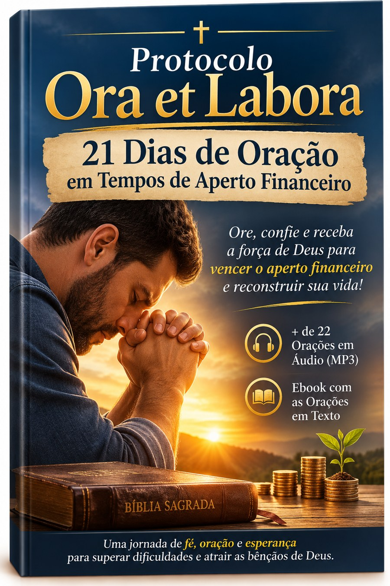

O Protocolo Ora et Labora acompanha você por 21 dias com orações curtas, em áudio e vídeo, para voltar a ter paz, confiança e direção enquanto trabalha para sair desse momento.
Quero começar meus 21 diasCompra 100% segura • Acesso imediato

Assista a uma das orações do protocolo e conheça o checklist imprimível para acompanhar os seus 21 dias.
Se você se reconhece em alguma destas situações, este protocolo foi pensado para você.
Contas atrasadas, dívidas e a sensação de não ver saída. Aqui você encontra um momento diário de paz para respirar e rezar.
Você sente que é hora de recomeçar e quer dar esse passo com fé, constância e o coração aberto.
Você sabe que rezar sustenta a alma e quer um roteiro simples para não deixar a oração de lado nos dias difíceis.
Sua rotina é corrida. São cerca de 6 minutos por dia, para ouvir, assistir ou ler em qualquer lugar.
Reze e trabalhe: a oração dá a força, e a sua atitude diária faz o resto.
Todos os dias você tem uma oração em vídeo, em áudio e em texto. Use o que for melhor para o seu momento.
Cada um dos 21 dias gira em torno de uma palavra que guia a oração e o seu coração durante o dia.
Ao terminar a oração, marque o dia no planner para ver a sua constância crescer até o dia 21.
Um único acesso com tudo para viver os 21 dias, no celular, tablet ou computador.
Histórias de quem viveu os 21 dias.
"[ Depoimento 1 ]"
"[ Depoimento 2 ]"
"[ Depoimento 3 ]"
Um acesso, tudo incluso, com garantia.
Pagamento único • Acesso imediato
Quero meu acesso agoraPagamento 100% seguro • Garantia de 7 dias
Faça a oração, conheça o material e, se nos primeiros 7 dias você sentir que não é para você, envie um e-mail e devolvemos 100% do valor, sem perguntas e sem burocracia.
Tudo o que você precisa saber antes de começar.
Após a confirmação do pagamento, você recebe o acesso imediato por e-mail. O material é 100% digital e funciona em celular, tablet e computador.
Cerca de 6 minutos por dia. Você pode rezar de manhã, no intervalo do trabalho ou antes de dormir.
[ Ajuste conforme o seu público ] O protocolo é um convite à oração e à confiança em Deus, aberto a todos que desejam rezar durante esse período.
Sim. Cada dia tem uma oração em vídeo e a mesma oração em áudio, além do texto no PDF.
Sim. O PDF com todos os textos e o planner foram feitos para impressão.
Não. O protocolo é um material de fé e de apoio espiritual, e não promete ganhos ou resultados financeiros. A oração fortalece o coração, e a mudança vem junto com a sua ação e o seu trabalho.
Você tem 7 dias de garantia. Basta enviar um e-mail e devolvemos 100% do valor.
Poucos minutos por dia para rezar, confiar e seguir em frente.
Quero meu acesso agora